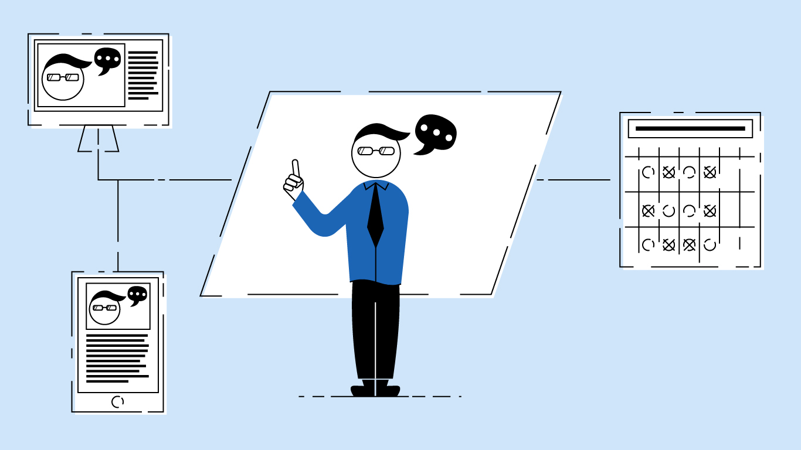

In 2019, a VCD capstone class set out to improve the undergraduate experience at Eastern Washington University. More than 30 students were surveyed throughout the dormitories and beyond in combination with research on the future of plans of other universities. The goal of this research? Identify problems with the undergrad experience and create a plan of action to resolve them.
There were two main goals developed to address some of the issues discovered by the research: implement more flexible scheduling to help both traditional and non-traditional students succeed as well as introduction of interdisciplinary class projects. These classes helped students network outside of their major, get a better understand of their role in the workplace, and get real experience as a member of a team. But most importantly, it helped them feel like they were a part of something big.
The Process
The Research
In April/May of 2019, a survey and timeline activity was provided to approximately 30 students at the EWU dormitories. Online research of other universities showed that some were already using lecture capture technology to allow students to watch lectures from home, which provided them with a competitive advantage.
- Diversity was a major concern among students.
- A large number of students were frustrated with their general education classes.
- Many students disliked the cost of living on campus.
- Many students disliked the cost of living on campus.
- Some non-traditionally aged students had issues building their lives around their education and wanted to be more flexible.
Implementation
Tech-heavy features were tested in the then under construction Catalyst building.
The university took advantage of the Palouse Prairie Restoration Project and used it as the first major interdisciplinary project.
The university slowly experimented with different approaches to flexible class scheduling, taking into account student feedback and departmental needs.
Classrooms were more thoroughly connected to the internet and utilized streaming services in order to allow students to attend class- event when they can't make it.
Before
- Students must build their life around rigid, outdated school schedules
- Students of different disciplines rarely get an opportunity to interact academically.
- Industry involvement is common in some majors, but overall could be expanded by getting local businesses more involved in class projects and curriculum.
- Students not feeling prepared for workforce
After
- Students can build school around their life with the flexible class scheduling, allowing students more freedom in when they learn.
- Interdisciplinary classes improve student outlooks and expand campus community.
- Interdisciplinary industry projects help students work on real-world projects in a real-world environment.
- Local business involvement in senior projects improves student knowledge of real-world business.
The Shift
- The availability of archived online lectures gave students a piece of mind to be able to better handle the everyday stresses of juggling school life with work and family life.
- Due to students not being graded on attendance, more non-traditional students feel empowered to succeed.
- Graduation requirements changed so that students would complete an interdisciplinary project as a senior project.
- The benefits of the students working together from different majors gave a better understanding of skills needed in the workforce, as well as an understanding of how to work with a variety of departments in the workplace.
Flexible scheduling
On-campus classes offered as a 4x week option with students only needing to attend 2 of the classes. The same lecture would be done twice a week, this could all be done by one professor or by two professors splitting the time.
Classes would be partially online, with classroom lectures being live-streamed so that any students not able to make it to class could watch from home. These lectures would also be archived online so that students could watch them later in the day or at another date so that they are still caught up on exactly what was covered in class, as opposed to trying to copy notes from another student later. Not all classes would be able to follow this formula, but making this possible for the majority of GECR classes would be a great option to help non-traditional and new students.
How tests/quizzes are administered are up to the individual professor. They can either be done on campus or from home using an online proctoring service at the discretion of the professor.
On-campus attendance is no longer part of the grading system. Professors have the option to require students to watch the archived lectures if they miss a class, with the at-home streaming service logging when a student watches a lecture. It’s up to a student to make prior arrangements if they can’t make it to campus for a required quiz/test day.
Collaborative Learning
- Traditional Senior projects would be replaced by an interdisciplinary senior project. This project would be either a project constructed by staff, or a real world project provided by a local business. This project would require the students to cover all sections of the project so that they must work together with students from other majors to get the full understanding of the scope of the project.
- This would provide opportunities for students to work with local industries and network outside of their major. It also gives students a better understanding of how a real-world project would work, as they will have to think about all facets of the project, not just what they would be doing within their department. Schedule these classes based on the projects, giving students more time to work with each other’s schedules independently. Classes would serve as progress check-ins.
- Businesses that partner with the school would offer a mentor to help the students as they work on the project. The mentor can be available to come in a certain number of days during the quarter to discuss the project with students. The mentor can offer information regarding how they have approached a similar project at their workplace as well as answer questions that students have regarding the specific project that they are working on.
The Achievement
- Since the launch of the flexible schedules and collaborative learning programs, overall student enrollment has increased.
- More non-traditional students are enrolled because of both flexible schedules and the reputation that EWU has for properly preparing their students to find employment post-graduation.
- Graduation rate is up for both traditional and non-traditional students because of the flexibility and increased community engagement allowing them to see the value of their education.
- Because of interdisciplinary projects, students are more prepared for joining the workforce as well as EWU students having a better reputation with local businesses.
- Enrollment improves because students are receiving the education they want: challenging real world projects that teach them skills they can transfer straight into the workplace.
- Students have larger networks both throughout the EWU campuses and into their industries of choice.